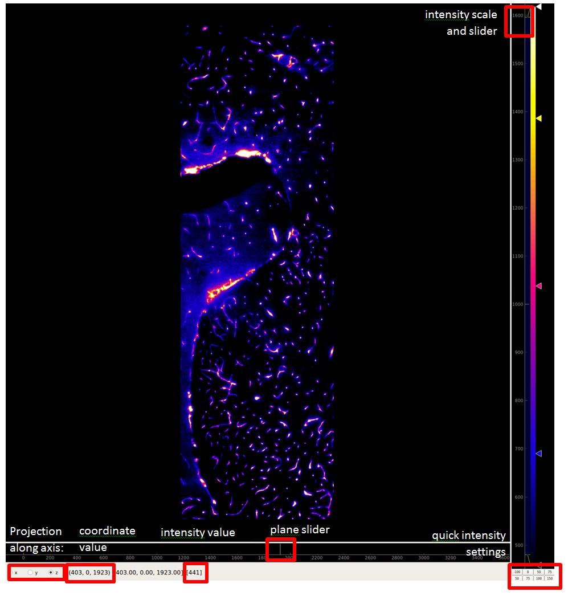

DataViewer
Data viewer showing 3d data as 2d slices.
Usage

Note
This viewer is based on the pyqtgraph package.
-
class DataViewer(source, points=None, vectors=None, orientations=None, annotation=None, axis=None, scale=None, title=None, invertY=False, minMax=None, screen=None, parent=None, default_lut='flame', max_projection=None, points_style=None, vectors_style=None, original_orientation='zcxy', orientations_style=None, **kwargs)[source]
Bases: QWidget
-
change_max_projection(value=None)[source]
-
change_orientations_color()[source]
-
change_orientations_threshold(value=None)[source]
-
change_points_color()[source]
-
change_vectors_color()[source]
-
change_vectors_threshold(value=None)[source]
-
color_last(source)[source]
-
enable_mouse_clicks()[source]
-
eventFilter(self, a0: Optional[QObject], a1: Optional[QEvent]) → bool[source]
-
getXYAxes()[source]
-
get_coords(pos)[source]
-
handleMouseClick(event)[source]
-
initializeSources(source, scale=None, axis=None, update=True)[source]
-
initialize_points_item()[source]
-
initialize_vectors_item()[source]
-
is_color(source)[source]
-
onRangeChanged()[source]
-
padded_shape(shape)[source]
-
plot_scatter_markers(ax, index)[source]
-
refresh()[source]
Forces the plot to refresh, notably to display scatter info on top
.. rubric:: Returns
-
save_screenshot(*_)[source]
Save a PNG/JPEG/TIFF screenshot of the current viewer.
By default, captures just the central image area (graphicsView).
Switch to self.grab() below if you want the whole window (incl. LUTs).
-
scale_coords(x, x_axis, y, y_axis)[source]
-
setMinMax(min_max, source=None)[source]
-
setSliceAxis(axis)[source]
-
setSource(source, index='all')[source]
-
set_color_scheme(type_, lut=0)[source]
-
set_orientations(orientations)[source]
-
set_points(points)[source]
-
set_vectors(vectors)[source]
-
sync_cursors(x, y)[source]
-
toggle_layer(i, state)[source]
-
updateImage()[source]
-
updateLabel()[source]
-
updateLabelFromMouseMove(event_pos)[source]
-
updateSlice(force_update=False)[source]
-
updateSlicer()[source]
-
updateSourceRange()[source]
-
updateSourceSlice()[source]
Set the current slice of the source
-
update_orientations()[source]
-
update_points()[source]
-
update_vectors()[source]
-
DEFAULT_SCATTER_PARAMS = {'brush': 'red', 'pen': 'red', 'size': 10, 'symbol': '+'}
-
property all_colour
-
property color_axis
-
mouse_clicked
Triggered when the mouse is clicked in the image view. The signal emits the x, y, and z coordinates of the click.
-
property space_axes